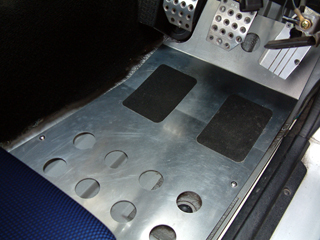
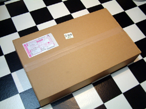
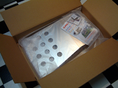
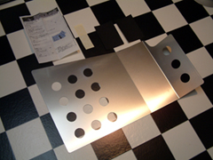
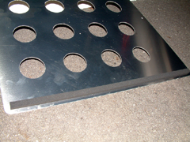
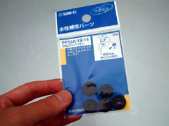
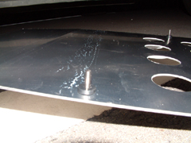
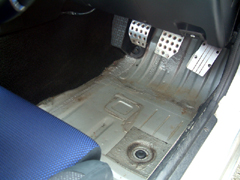
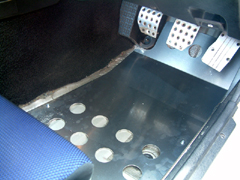
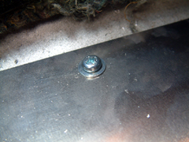

雨漏りでシートを取り外した際、ドライバー側のカーペットを切り取ったまではよかったの ですが、床が金属なため、特に雨の日の濡れた靴底ではとても滑りやすくなってしまいました。またフロア・カーペットを付けてもよいのですが、カーペットはちゃんと固定しないと、 途中でよれて、アクセルに引っかかったりして危険なので、アルミ製でも滑り止めの付いた、 ZOOMのフロア・パネルを取り付けることにしました。このパネルは内装のカーペットがあることを前提に設計されているので、カーペットなしの場合にはネジで固定する必要があります。 ZOOMのサイトにある製品写真だと、ネジ用の穴があるみたいに見えるのだけど、実際にはなかった・・でもこの方が、好きに位置を決められるのでよかったみたい。
 |
結構でかいのが届いた。 |
 |
でもアルミ製なので軽い。 |
 |
フロア・パネル本体と、滑り止めのシール・シート、説明書。 |
 |
カーペットがないと、振動しやすいのでビビリ防止にホームセンタで売っている スポンジ製の隙間テープを付けた。 |
 |
床に穴を開けて固定するため、その穴から水が浸入しないようにするのと、 振動防止の目的で、水道用のゴムパッキンを購入。 |
 |
フロアパネルと床に穴を開けたあと、フロアパネルにネジを通して、 床との間にゴムパッキンを挟む。 |
 |
取り付け前 |
 |
取り付け後 あと、滑り止めシートを貼って完成。でもこのシートの位置決めが 結構難しかった。一度貼ると、かなり強力な粘着シートなので、たぶん取れない。 |
 |
パネルと床をネジで固定。床は思ったよりも簡単に穴が開いてしまった。随分薄いんだな・・ 穴の位置は車体の底をさわって、干渉物がないところに決める。 サイド・パフォーマンス・バーが結構ぎりぎりだった。 |


それでもまだビビる今日この頃。ネジの固定を増やさないとだめみたい。
ｂｙ すすたわり